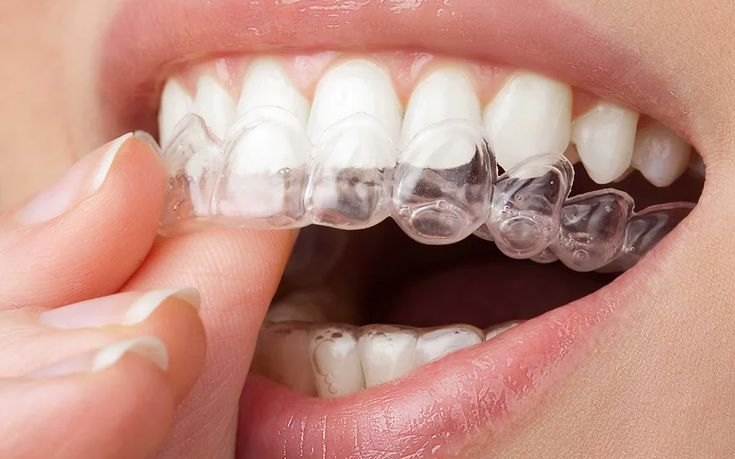
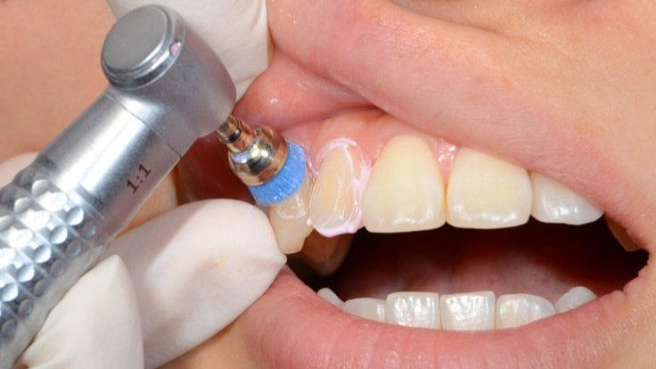

Orthodontic Treatments
Straightening crowded, gapped or protruding teeth, and correcting how the upper and lower jaws meet.
Orthodontic treatment moves teeth gradually into a better position. It is not only about appearance: crowded and overlapping teeth are much harder to clean, and an uneven bite wears the teeth unevenly and can strain the jaw joint.
Treatment starts with records (x-rays, photographs and impressions) and a plan showing what can be achieved and roughly how long it will take. Braces are then fitted and adjusted at regular reviews, or a course of clear aligners is made up and changed at set intervals. A retainer afterwards holds the result; without one, teeth drift back.
Fixed Braces
Brackets bonded to the teeth and linked by a wire that is adjusted at each review. The most versatile option, and the one that corrects the widest range of cases.
Clear Aligners
A series of removable, near-invisible trays that move the teeth in small steps. Taken out to eat and to clean, and far less noticeable than fixed braces, though they suit some cases better than others.
Retainers
Worn once treatment finishes. Teeth drift back towards where they started, so the retainer is what makes the result last.
Bite and Jaw Alignment
Correcting an overbite, underbite or crossbite. An uneven bite wears the teeth unevenly and can strain the jaw joint, so it is treated for function as much as for appearance.
Adult Orthodontics
There is no age limit. Treatment in adults can take longer because the bone is denser, but the teeth move by exactly the same mechanism.
Implants
A titanium post placed in the jaw that acts as a new tooth root.
An implant is the closest thing to a natural tooth. A small post is placed into the jawbone and left to integrate with it over a few months, and a crown is then attached on top.
Because it is anchored in bone rather than to the neighbouring teeth, those teeth are left untouched, and the bone in that area keeps being used instead of shrinking away. It does need enough healthy bone and healthy gums, which we assess with x-rays first.
Single Tooth Implant
One post and one crown, replacing a single missing tooth without touching the teeth on either side of the gap.
Multiple Implants
Several posts restoring a run of missing teeth, carrying either individual crowns or a bridge between them.
Implant-Retained Dentures
A denture that clips onto implants instead of resting on the gum, so it stays put while you eat and speak.
Assessment and Planning
X-rays to confirm there is enough healthy bone and gum to hold an implant, before any surgery is booked.
Cosmetic Dentistry
Treatment aimed at how the teeth look: their shade, their shape, and the line they make when you smile. It is planned around teeth that are already healthy, so any decay or gum problem is treated first.
Veneers
Thin facings bonded to the front of the teeth to change their shape, shade or alignment.
Veneers are for teeth that are sound but do not look the way you want them to: chipped edges, deep staining that whitening will not lift, small gaps, or teeth slightly out of line. A very thin layer of the front surface is prepared and a custom facing is bonded over it.
Porcelain Veneers
Laboratory-made facings with a natural translucency that holds its shade for years. Made from an impression, then bonded on at a second visit.
Composite Veneers
Built up directly on the tooth in a single visit. Less costly than porcelain and easily repaired, though they pick up stain sooner.
Chip and Edge Repair
Rebuilding a chipped corner or a worn edge, where a full veneer is more than the tooth actually needs.
Shade and Shape Planning
The shade and the shape are agreed with you before anything is made, so the result is never a surprise.
Teeth Whitening
Professional whitening lifts the shade of your natural teeth safely and predictably.
Teeth darken with age and with tea, coffee, red wine and tobacco. Professional whitening uses a controlled gel to lift that discolouration, supervised, with your gums protected, at a strength over-the-counter kits do not reach.
In-Practice Whitening
Done here in one appointment with your gums protected throughout, at the strongest concentration we can safely use.
Take-Home Trays
Custom trays and gel used at home over a couple of weeks. Slower, and easy to top up later without another appointment.
Managing Sensitivity
Sensitivity for a day or two afterwards is common and settles. We check beforehand how likely it is to affect you.
What Will Not Change
Fillings, crowns, bridges and veneers keep their existing shade, so some may need replacing afterwards to match.
Crowns, Bridges & Dentures
Rebuilding teeth that are broken down or heavily filled, and replacing those that are already gone, so the bite stays even and the teeth around a gap do not drift into it.
Crowns
A cap that covers a weakened tooth completely, restoring its shape, strength and appearance.
A tooth that has been heavily filled, cracked or root treated can no longer take a full bite on its own, and will eventually split. A crown wraps over what remains and carries the load instead. We prepare the tooth, take an impression, and fit a temporary crown while the permanent one is made.
All-Ceramic Crowns
The most natural looking option, with no metal edge showing at the gum line. Usually the choice for front teeth.
Porcelain-Fused-to-Metal Crowns
A metal core under a porcelain surface. Very strong, which suits the back teeth that take the heaviest load.
Temporary Crowns
Fitted while the permanent crown is made, so the prepared tooth is protected and you are never left with a visible gap.
Crowns After Root Canal
A root treated tooth is more brittle and will eventually split under a full bite. A crown takes that load instead.
Dental Bridges
A fixed replacement for a missing tooth, anchored to the teeth on either side.
When a tooth is lost, the teeth beside it start to tilt into the space and the one opposite begins to over-erupt. A bridge closes the gap for good: the neighbouring teeth are prepared as supports and the replacement is joined between them as a single unit.
Fixed Bridge
The standard design. The teeth on both sides of the gap are prepared as supports and the replacement tooth sits between them.
Cantilever Bridge
Supported from one side only, for a gap that has a sound tooth on just one of its sides.
Implant-Supported Bridge
Carried on implants rather than on natural teeth, so the neighbouring teeth are left completely untouched.
Cleaning Underneath
A bridge is cemented in, so floss threaders or an interdental brush are needed beneath it. We show you how at the fitting.
Dentures
Removable replacements for several missing teeth, or for a full arch.
Dentures restore the ability to chew and to speak clearly, and support the shape of the face, which changes once the back teeth are gone. Making them takes several short visits: impressions, a trial fitting, then the finished denture. Small adjustments in the first few weeks are normal and expected.
Full Dentures
Replacing every tooth in the upper or lower jaw, restoring the bite and supporting the shape of the face.
Partial Dentures
Filling several gaps while clipping around the teeth you still have, which also stops those teeth drifting.
Repairs and Relines
Gums change shape over time. A reline refits the denture to the ridge; a repair deals with a crack or a lost tooth.
Trial Fitting
A try-in before the final set is made, so the bite, the shade and the appearance are all checked with you first.
Restorative Treatments
Saving a tooth that has decayed or become infected, so it stays in the mouth and keeps doing its job rather than being taken out.
Filling
Decay is cleaned out and the tooth rebuilt, so it can be used normally again.
A cavity does not heal on its own. It spreads, and the further it travels the closer it gets to the nerve. A filling stops it: we remove the decayed tissue, clean the cavity, and rebuild the tooth with a material matched to its own shade so the repair does not show.
Tooth-Coloured Fillings
Composite matched to the shade of the tooth and bonded in place, so the repair does not show.
Amalgam Fillings
Hard-wearing silver fillings, still a sound choice for back teeth where the load is heaviest.
Temporary Fillings
Placed to settle a tooth or to seal it between visits, then replaced with the permanent restoration.
Treating It Early
A small cavity is one short appointment. Left until it reaches the nerve, the same tooth needs root canal treatment or a crown.
Root Canal
When decay or injury reaches the nerve, root canal treatment saves the tooth instead of losing it.
Inside every tooth is a soft core of nerve and blood vessels. If bacteria reach it the tooth becomes painful, and an abscess can form at the root tip. Root canal treatment removes that infected tissue and seals the tooth so bacteria cannot return. Depending on the tooth, it is completed over one or two visits.
Local Anaesthetic
The tooth is fully numbed first. The infection is the painful part, not the treatment for it.
Removing the Infection
The infected pulp is taken out of the crown of the tooth and out of each of its roots.
Cleaning and Shaping
The canals are disinfected and shaped, so nothing is left behind for bacteria to live on.
Sealing and Restoring
The canals are sealed and the tooth rebuilt, with a crown often recommended afterwards to protect it.
Oral Surgery
Removing a tooth that cannot reasonably be saved, including wisdom teeth and roots that have broken off below the gum line.


Preventive Dentistry
The routine work that keeps the rest of this page unnecessary: finding problems while they are still small, and keeping the gums healthy.
Consultation / Examination
Every course of treatment starts with a proper look, so that anything we recommend is based on what is actually there.
We talk through your dental history, any pain or sensitivity you have noticed, and what you would like to change. We then examine the teeth, gums, tongue and soft tissues, and take x-rays where they are needed to see below the surface.
Your History and Concerns
What has been bothering you, what you have noticed, and what you would like to change about your teeth.
Examination
The teeth, gums, tongue and soft tissues, checked properly rather than glanced over.
X-Rays Where Needed
To see decay between the teeth, and the state of the roots and bone below the gum line.
A Plan and Costs
What needs attention now, what can reasonably wait, and what each option involves, before you commit to anything.
Scaling and Polishing
A professional clean removes the hardened deposit that brushing at home cannot shift.
Plaque left undisturbed hardens into calculus along the gum line and between the teeth. Once hardened, no toothbrush will remove it, and it keeps the gums inflamed, which is how gum disease starts.
Scaling
Hardened deposit lifted off the tooth surface, above and below the gum line where a toothbrush cannot reach.
Polishing
The enamel smoothed so new plaque takes longer to settle, and surface stain from tea, coffee and tobacco removed.
Gum Check
Bleeding and pocketing recorded, so gum disease is caught while it is still reversible.
Cleaning at Home
The brushing and interdental technique that keeps the result until your next visit.